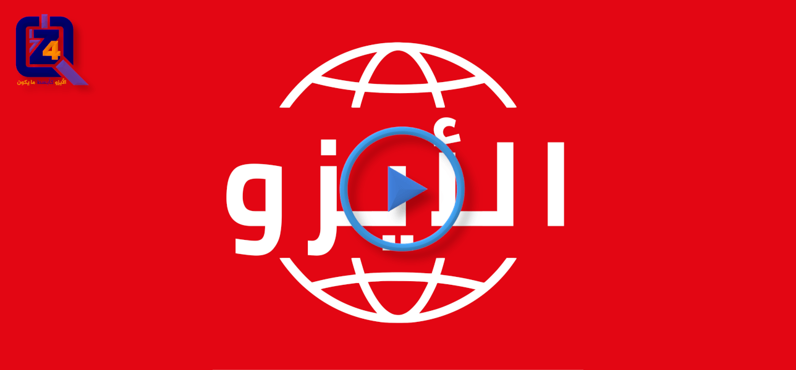

مرحبًا بكم في موسوعة فور زد لاستشارات الجودة. الكثير منا سمع بالتأكيد من قبل عن مصطلح الأيزو. وربما يعرف العديد منا أيضًا أنه مرتبط بالمعايير والمواصفات، بهدف ضمان أفضل الممارسات في تقديم الخدمات وتصنيع المنتجات. لنتعرف معًا على المزيد عن تاريخ الأيزو، من يصدر المعايير، وماذا يعود علينا بالنفع عند تطبيق تلك المعايير.
ما هو الأيزو؟
- الأيزو اختصار للمنظمة الدولية للتوحيد القياسي، وهي منظمة غير حكومية مستقلة، تأسست في 23 فبراير 1947.
- الأيزو شبكة عالمية مشكلة من هيئات المعايير الوطنية، على أن يمثل كل دولة عضوًا واحدًا فقط.
- الأيزو وظيفتها الأساسية وضع المعايير الدولية، ويتم تنسيق أعمالها من قبل الأمانة المركزية في جنيف، سويسرا.
- الأيزو منظمة غير ربحية: يسمح لها بيع المعايير، بتمويل تطوير وتعديل تلك المعايير في مناخ محايد ومستقل، وعمل معايير جديدة.
- الأيزو تجمع الخبراء معًا لتبادل المعرفة وتطوير المعايير الدولية، التي توفر حلولاً للتحديات العالمية.
”الجودة لا تأتي اعتباطًا؛ بل هي مجهود منظم، وتخطيط مدروس، والتزام دائم بالتحسين المستمر. وذلك ما تعيه شركة فور زد للجــودة جيدًا، وهذا هو جوهر ما تقدمه لعملائها الكرام.“
الأيزو في أرقام:
(حتى: 21 مايو، 2022)
عضو
مواصفة دولية
معيار جديد كل شهر
لجنة فنية
ما هو المعيار الدولي؟
- المعيار الدولي عبارة عن مستند يحتوي على معلومات عملية وأفضل الممارسات.
- غالبًا ما يصف طريقة متفق عليها للقيام بشيء ما، أو حل لمشكلة عالمية.
- باختصار، فوائد معايير الأيزو هي:
- جعل المنتجات متوافقة، بحيث تناسب وتعمل بشكل جيد، مع بعضها البعض.
- التعرف على الأمور المرتبطة بالسلامة للمنتجات والخدمات.
- تبادل الأفكار، والحلول الجيدة، والمعرفة التكنولوجية، وأفضل الممارسات الإدارية.

شاهد هذا الفيلم القصير عن معايير الأيزو الدولية »
”الأيزو هي منظمة دولية مستقلة غير حكومية، تضم في عضويتها 167 هيئة وطنية للمعايير. تدعم الابتكار وتوفر حلولًا للتحديات العالمية“
أمثلة على المعايير في الحياة اليومية:
أحجام الورق:
- تعمل معايير أحجام الورق (على سبيل المثال عائلة الـ A4)، على جعل الحياة أسهل لمصنعي الطابعات، وآلات التصوير، ومستلزمات المكاتب، لأنهم يعرفون أن منتجاتهم ستعمل مع الأحجام القياسية المتاحة للورق.
سلامة الغذاء:
- الطعام الذي نشتريه آمن في تناوله، بفضل متطلبات النظافة، والسلامة المتفق عليها دوليًا، والمحددة في المعايير.
رموز البلدان والعملات:
- نرى العالم أجمع بسهولة، بفضل استخدام الرموز الموحدة للبلدان والعملات.
بطاقات الائتمان:
- يمكن استخدام بطاقات الائتمان في أي مكان، لأنها تلبي المعايير التي تحدد الأبعاد، والتكنولوجيا، وبروتوكولات الاتصال التي يمكن أن تعمل مع ماكينات الصراف الآلي وأنظمة الدفع في جميع أنحاء العالم.
”المعايير الدولية تجعل الأشياء تعمل. فتوفر المعايير مواصفات عالمية، للمنتجات والخدمات والأنظمة، لضمان الجودة والسلامة والكفاءة.“
كيف نستفيد من المعايير الدولية؟
الصناعة:
- تصبح أكثر قدرة على المنافسة من خلال تقديم المنتجات والخدمات المقبولة عالميًا.
- دخول أسواق جديدة بسهولة.
- زيادة الأرباح من خلال تقديم منتجات ذات جودة عالية، ومستوى عال من التوافق الدولي والأمان.
- تقليل التكاليف من خلال عدم إعادة اختراع العجلة، واستخدام الموارد المتاحة بشكل أفضل.
- الاستفادة من المعرفة، وأفضل الممارسات من كبار الخبراء في جميع أنحاء العالم.
المشرعين:
- تنسيق اللوائح بين البلدان لتعزيز التجارة العالمية.
- زيادة المصداقية والثقة في جميع مراحل سلسلة الإمداد والتوريد.
- تسهيل الأمر على البلدان للاستعانة بمصادر خارجية متخصصة.
المجتمع:
- خيارات أوسع لمنتجات وخدمات آمنة وموثوقة وبأسعار تنافسية.
- أفضل الممارسات والإجراءات المتضافرة على المستوى التنظيمي للتعامل عمليًا مع التحديات العالمية، مثل تغير المناخ والتنمية المستدامة.
كيف تعمل منظمة الأيزو؟
- تطور منظمة الأيزو معيارًا، فقط إذا كان هناك حاجة في السوق إليه.
- اللاعبون الرئيسيون في تلك العملية هم الدول الأعضاء، والخبراء، والأمانة المركزية للمنظمة.
- يتم وضع المعايير الدولية من قبل أشخاص، يطلق عليهم "خبراء"، والذين يأتون من مجال الصناعة، والجهات الحكومية، ومنظمات حماية المستهلك، والأوساط الأكاديمية، والمنظمات غير الحكومية وغيرها.
- دور الدول الأعضاء هو تحديد الخبراء (أكثر من مائة ألف حول العالم)، لضمان تمثيل نشط لبلادهم.
- الأمانة المركزية (150 موظف بدوام كامل)، تنسق عملية تطوير المعايير ونشرها.
إبدأ اليوم مع أفضل مستشاري الأيزو في الشرق الأوسط.
إذا رغبتم في معرفة المزيد حول الأيزو، أو معاييره، أو كيف يمكن أن ينهض الالتزام بمواصفات الأيزو القياسية بأداء العاملين، ونمو المبيعات، ورضاء العملاء،
يمكنكم التواصل معنا، بإرسال بريدًا إلكترونيًا على العنوان التالي: support@the4z.com. نحن ملتزمون بجعل الأيزو سهل وبسيط وفي متناولكم.
أو الاتصال اليوم بشركة فور زد للجــودة على رقم (أيضًا واتساب):
0097333995807 أو 00905050304016.موضوعات أخرى:
- اعتماد جودة التعليم
- مراحل اعتماد الأيزو
- نظام إدارة الجودة
- مفاهيم إدارة الجودة
- مبادئ إدارة الجودة
- هل أنت جاهز لشهادة الأيزو؟
- التخطيط الاستراتيجي
فيديوهات:
روابط خارجية:
اقتباسات عن الجودة:
- لا يكفي أبدًا أن تقدم أفضل ما لديك، يجب أن تعرف أولاً ما يجب عليك فعله، وبعد ذلك يمكنك أن تقدم أفضل ما لديك